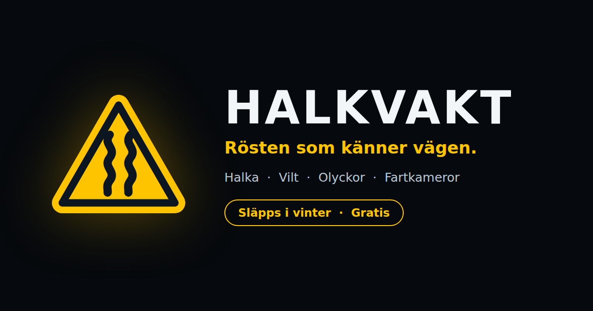

Pressmaterial
Halkvakt är en gratis mobilapp som varnar bilförare med rösten — som en passagerare — för halka, vilt, olyckor och fartkameror på vägen framför dem. Byggd på Trafikverkets öppna livedata. Släpps i vinter till Android och iPhone.
// Läget på vägarna just nu
LIVE FRÅN TRAFIKVERKETS DATA
// Snabbfakta
// Så beskriver vi Halkvakt
"Vintervägar dödar och skadar i tysthet — ofta för att föraren fick veta för sent. Halkvakt sitter bredvid dig som en passagerare som läst allt Trafikverket vet, och säger till i god tid: halka framför dig, vilt rapporterat, olycka bakom kurvan. Gratis, utan konto, och utan att din position någonsin lämnar telefonen."
Texten får användas fritt i redaktionellt sammanhang.
// Bilder & logotyp
{kind=link}
{kind=link}

Delningsbild (1200×630){kind=link}
Fler bilder — appskärmar och butiksmaterial — publiceras här inför släppet. Skärmdumpar från livekartan får användas fritt med källangivelse.
// Presskontakt
Presskontakt och mejladress publiceras här i samband med att halkvakt.se öppnar. Fram till dess uppdateras denna sida löpande med aktuellt material.
halkvakt · livekartan · om appen · Öppna data från Trafikverket (CC0)